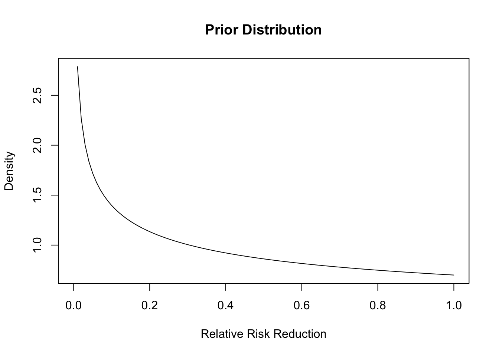
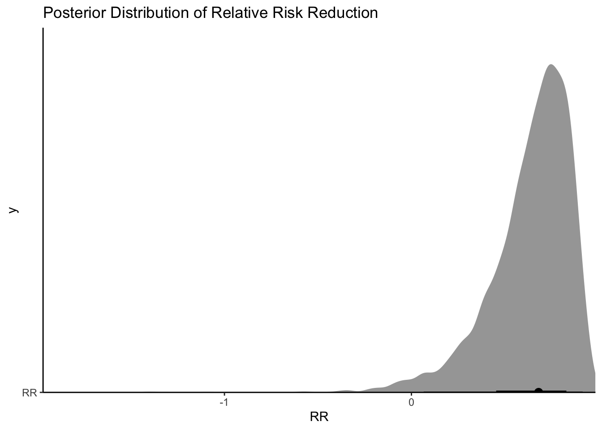
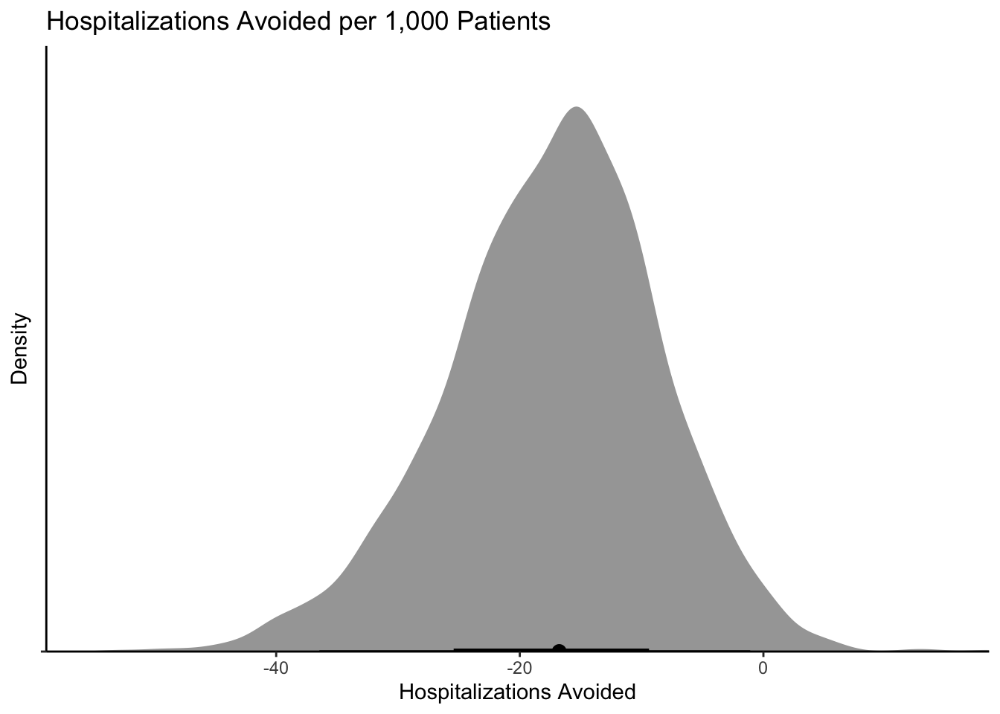

Paxlovid is a new antiviral (protease inhibitor) that when paired with ritonavir provides excellent protection against hospitalization for those patients infected with SARS-CoV-2. Pfizer, the manufacturer, had two endpoints. The first endpoint was for “High Risk” patients and a secondary endpoint for “Standard Risk” patients. I thought it was neat that BioNTech/Pfizer used a Bayesian analysis for their BNT162b2 vaccine and was a little surprised when I saw a frequentist p-value for their second endpoint:
A follow-on analysis at 80% of enrolled patients was consistent with these findings. In this analysis, 0.7% of those who received PAXLOVID were hospitalized following randomization (3/428 hospitalized with no deaths), compared to 2.4% of patients who received placebo and were hospitalized or died (10/426 hospitalized with no deaths); p=0.051.
Oh no, p < 0.05, let’s throw away the drug for standard patients. This seems like a perfect time to do a Bayesian analysis and see what our uncertainty could be regarding the effect in this seemingly underpowered arm of the trial (e.g., we would have liked to have seem more people in this cohort because the smallest reasonable effect we would like would be say a 20% reduction in relative risk or even less as our hospitals fill with patients).
Reanalysis
First we need to recreate the data:
library(cmdstanr)
This is cmdstanr version 0.4.0
- Online documentation and vignettes at mc-stan.org/cmdstanr
- CmdStan path set to: /Users/michael/.cmdstanr/cmdstan-2.28.2
- Use set_cmdstan_path() to change the path
A newer version of CmdStan is available. See ?install_cmdstan() to install it.
To disable this check set option or environment variable CMDSTANR_NO_VER_CHECK=TRUE.
library(tidybayes)library(posterior)
This is posterior version 1.2.1
Attaching package: 'posterior'
The following objects are masked from 'package:stats':
mad, sd, var
library(ggplot2)library(dplyr)
Attaching package: 'dplyr'
The following objects are masked from 'package:stats':
filter, lag
The following objects are masked from 'package:base':
intersect, setdiff, setequal, union
Seems like there is an effect! We can also reproduce the frequentist analysis:
prop.test(x =c(3,10), n =c(428,426),alternative ="less", correct =TRUE)
2-sample test for equality of proportions with continuity correction
data: c(3, 10) out of c(428, 426)
X-squared = 2.8407, df = 1, p-value = 0.04595
alternative hypothesis: less
95 percent confidence interval:
-1.000000000 -0.000353954
sample estimates:
prop 1 prop 2
0.007009346 0.023474178
Ok, so p < 0.05 in this is weird. Maybe they did some multiple testing adjustment? Moving on….
Enter Stan
I am going to use the following Stan code that was posted on this blog which in turn originated from this blog.
Nothing too crazy, it this code, it just fits our observed data to binomial distributions and we can look at the relative effect and the absolute effect
writeLines(readLines("trial.stan"))
Warning in readLines("trial.stan"): incomplete final line found on 'trial.stan'
//based on https://www.robertkubinec.com/post/vaccinepval/
// Which is based on https://rpubs.com/ericnovik/692460
data {
int<lower=1> r_c; // num events, control
int<lower=1> r_t; // num events, treatment
int<lower=1> n_c; // num cases, control
int<lower=1> n_t; // num cases, treatment
real a[2]; // prior values for treatment effect
}
parameters {
real<lower=0, upper=1> p_c; // binomial p for control
real<lower=0, upper=1> p_t; // binomial p for treatment
}
transformed parameters {
real RR = 1 - p_t / p_c; // Relative effectiveness
}
model {
(RR - 1)/(RR - 2) ~ beta(a[1], a[2]); // prior for treatment effect
r_c ~ binomial(n_c, p_c); // likelihood for control
r_t ~ binomial(n_t, p_t); // likelihood for treatment
}
generated quantities {
real effect = p_t - p_c; // treatment effect
real log_odds = log(p_t / (1 - p_t)) - log(p_c / (1 - p_c));
}
Additionally, we need to supply a prior. I am going to use exactly the same priors that Pfizer/BioNTech for their vaccine as a starting point:
curve(dbeta(x, shape1 = .700102, shape2 =1), from =0, to =1, ylab ="Density", xlab ="Relative Risk Reduction",main ="Prior Distribution")

This distribution places more density on the drug not having an effect, so we are being a bit pessimistic.
Run the Code
mod <-cmdstan_model("trial.stan")dat <-list(n=sum(dat_trials$arm_n),r_c=dat_trials[2,]$hospitalized,r_t=dat_trials[1,]$hospitalized,n_c=dat_trials[2,]$arm_n,n_t=dat_trials[1,]$arm_n,a=c(.700102,1))fit <- mod$sample(dat, refresh =0)
Running MCMC with 4 parallel chains...
Chain 1 Informational Message: The current Metropolis proposal is about to be rejected because of the following issue:
Chain 1 Exception: beta_lpdf: Random variable is nan, but must be in the interval [0, 1] (in '/var/folders/0x/6bnjy4n15kz8nbfbbwbyk3pr0000gn/T/Rtmp4CozXn/model-918e3eaf8895.stan', line 19, column 2 to column 39)
Chain 1 If this warning occurs sporadically, such as for highly constrained variable types like covariance matrices, then the sampler is fine,
Chain 1 but if this warning occurs often then your model may be either severely ill-conditioned or misspecified.
Chain 1
Chain 2 Informational Message: The current Metropolis proposal is about to be rejected because of the following issue:
Chain 2 Exception: beta_lpdf: Random variable is nan, but must be in the interval [0, 1] (in '/var/folders/0x/6bnjy4n15kz8nbfbbwbyk3pr0000gn/T/Rtmp4CozXn/model-918e3eaf8895.stan', line 19, column 2 to column 39)
Chain 2 If this warning occurs sporadically, such as for highly constrained variable types like covariance matrices, then the sampler is fine,
Chain 2 but if this warning occurs often then your model may be either severely ill-conditioned or misspecified.
Chain 2
Chain 3 Informational Message: The current Metropolis proposal is about to be rejected because of the following issue:
Chain 3 Exception: beta_lpdf: Random variable is nan, but must be in the interval [0, 1] (in '/var/folders/0x/6bnjy4n15kz8nbfbbwbyk3pr0000gn/T/Rtmp4CozXn/model-918e3eaf8895.stan', line 19, column 2 to column 39)
Chain 3 If this warning occurs sporadically, such as for highly constrained variable types like covariance matrices, then the sampler is fine,
Chain 3 but if this warning occurs often then your model may be either severely ill-conditioned or misspecified.
Chain 3
Chain 4 Informational Message: The current Metropolis proposal is about to be rejected because of the following issue:
Chain 4 Exception: beta_lpdf: Random variable is nan, but must be in the interval [0, 1] (in '/var/folders/0x/6bnjy4n15kz8nbfbbwbyk3pr0000gn/T/Rtmp4CozXn/model-918e3eaf8895.stan', line 19, column 2 to column 39)
Chain 4 If this warning occurs sporadically, such as for highly constrained variable types like covariance matrices, then the sampler is fine,
Chain 4 but if this warning occurs often then your model may be either severely ill-conditioned or misspecified.
Chain 4
Chain 1 finished in 0.1 seconds.
Chain 2 finished in 0.1 seconds.
Chain 3 finished in 0.1 seconds.
Chain 4 finished in 0.0 seconds.
All 4 chains finished successfully.
Mean chain execution time: 0.1 seconds.
Total execution time: 0.7 seconds.
Warning in seq.default(from = 1, len = along - 1): partial argument match of
'len' to 'length.out'
Warning in seq.default(to = N - 1, len = N - along): partial argument match of
'len' to 'length.out'
Warning in seq.default(len = N): partial argument match of 'len' to 'length.out'
Warning in seq.default(along = arg.names): partial argument match of 'along' to
'along.with'
Warning in seq.default(len = length(arg.list)): partial argument match of 'len'
to 'length.out'
Warning in seq.default(along = perm): partial argument match of 'along' to
'along.with'
Warning in seq.default(along = perm): partial argument match of 'along' to
'along.with'
Warning in seq.default(along = perm): partial argument match of 'along' to
'along.with'
Warning in seq.default(along = perm): partial argument match of 'along' to
'along.with'
Warning in seq.default(along = perm): partial argument match of 'along' to
'along.with'
Warning in seq.default(along = perm): partial argument match of 'along' to
'along.with'
Warning in seq.default(along = perm): partial argument match of 'along' to
'along.with'
Warning in seq.default(along = perm): partial argument match of 'along' to
'along.with'
Warning in seq.default(len = ncol(arg.dim)): partial argument match of 'len' to
'length.out'
Warning in seq.default(len = N): partial argument match of 'len' to 'length.out'
Warning in seq.default(along = arg.names): partial argument match of 'along' to
'along.with'
Warning in seq.default(along = arg.names): partial argument match of 'along' to
'along.with'
Warning in seq.default(len = length(arg.names)): partial argument match of 'len'
to 'length.out'
Warning in seq.default(along = perm): partial argument match of 'along' to
'along.with'
Analyzing the Results
First we can look at our summaries (note that I did look at the chains for mixing and we have adequate samples in the tails).
Warning in seq.default(from = 1, len = along - 1): partial argument match of
'len' to 'length.out'
Warning in seq.default(to = N - 1, len = N - along): partial argument match of
'len' to 'length.out'
Warning in seq.default(len = N): partial argument match of 'len' to 'length.out'
Warning in seq.default(along = arg.names): partial argument match of 'along' to
'along.with'
Warning in seq.default(len = length(arg.list)): partial argument match of 'len'
to 'length.out'
Warning in seq.default(along = perm): partial argument match of 'along' to
'along.with'
Warning in seq.default(along = perm): partial argument match of 'along' to
'along.with'
Warning in seq.default(along = perm): partial argument match of 'along' to
'along.with'
Warning in seq.default(along = perm): partial argument match of 'along' to
'along.with'
Warning in seq.default(along = perm): partial argument match of 'along' to
'along.with'
Warning in seq.default(along = perm): partial argument match of 'along' to
'along.with'
Warning in seq.default(along = perm): partial argument match of 'along' to
'along.with'
Warning in seq.default(along = perm): partial argument match of 'along' to
'along.with'
Warning in seq.default(len = ncol(arg.dim)): partial argument match of 'len' to
'length.out'
Warning in seq.default(len = N): partial argument match of 'len' to 'length.out'
Warning in seq.default(along = arg.names): partial argument match of 'along' to
'along.with'
Warning in seq.default(along = arg.names): partial argument match of 'along' to
'along.with'
Warning in seq.default(len = length(arg.names)): partial argument match of 'len'
to 'length.out'
Warning in seq.default(along = perm): partial argument match of 'along' to
'along.with'
variable
median
mean
q5
q95
rhat
lp__
-74.10
-74.41
-76.36
-73.47
1
p_c
0.03
0.03
0.02
0.04
1
p_t
0.01
0.01
0.00
0.02
1
RR
0.68
0.63
0.21
0.89
1
effect
-0.02
-0.02
-0.03
0.00
1
log_odds
-1.16
-1.19
-2.25
-0.25
1
So it seems like there is evidence of an effect (a relative risk reduction of 20-89%)!
draws <- fit$draws() %>%as_draws_df()draws %>%#median_qi(VE, .width = c(.5, .89, .995)) %>%ggplot(aes(y ="RR", x = RR)) +stat_halfeye()+scale_color_brewer()+theme_classic()+coord_cartesian(expand =FALSE)+labs(title ="Posterior Distribution of Relative Risk Reduction" )

Ok, so looks again like the bulk of the posterior distribution is a positive effect. If I said I were only interested in a drug that had a 30% relative risk reduction, I could do the following:
mean(as.numeric(draws$RR>.3))
[1] 0.921
Ok so 0.92 isn’t bad! In the middle of a pandemic with patients appearing (with standard risk factors) and an oral treatment option, I would take that probability. I could also look at what the absolute effect would mean on hospitalizations:
draws %>%ggplot(aes(y ="", x = effect*1000)) +stat_halfeye()+scale_color_brewer()+theme_classic()+coord_cartesian(expand =FALSE)+labs(title ="Hospitalizations Avoided per 1,000 Patients",y ="Density",x ="Hospitalizations Avoided" )

If I could prevent 0-40 hospitalizations with a cheap-ish treatment, I would take it. A reminder that if I admit 20 patients and they each stay 4-5 days, I have tied up a ton of “bed days.”
Summary
The important point here is the Bayesian analysis provides a way to do these kinds of analysis and not throw away data when endpoints are not met. In this case the “standard risk” patients would likely profit from the drug.
![]()